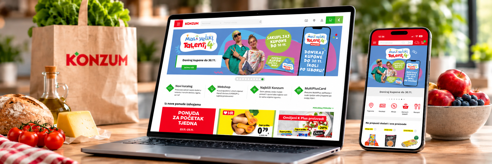
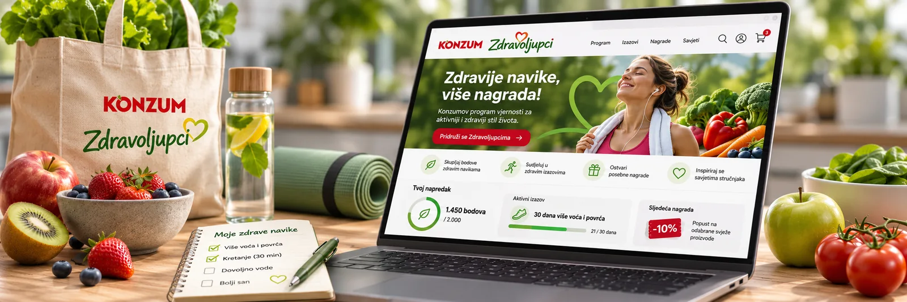
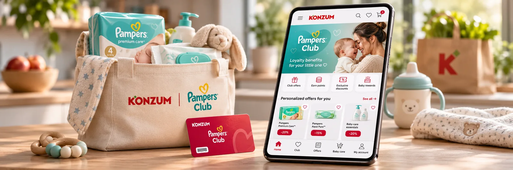
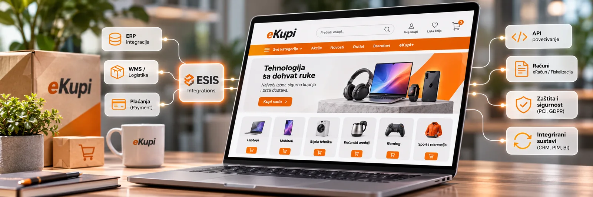
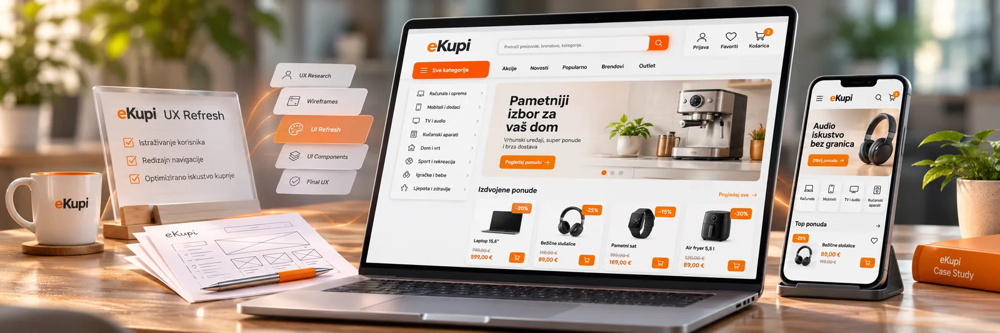
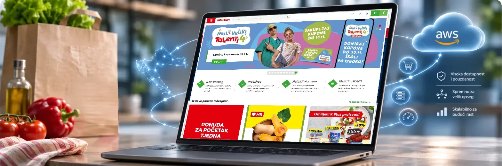

eKupi
eKupiOutdoor parcel lockers
From an idea on paper to a physical, digital and logistics service.
eCommerceLogistics
Here are projects I contributed to, led or delivered across retail, eCommerce, logistics and insurance. Open a case study to explore the challenge, my role, the work and the outcome.
eKupiFrom an idea on paper to a physical, digital and logistics service.

Managing priorities and delivery across a modern, integration-heavy eCommerce platform.

Connecting retail operations and technology behind a refreshed online shopping experience.

Working on personalized product recommendations using existing retail and loyalty data.
eKupiA digital knowledge and support channel designed to make everyday operations easier.
Online ordering, in-store collection and a shopping journey that crosses channels.

Bringing a large consumer loyalty initiative into the online shopping journey.

Connecting a partner loyalty proposition to online shopping and logistics.

eKupiConnecting brand inventory and campaign operations to an eCommerce platform.

eKupiMaking product discovery and checkout easier across multiple webshops.

Linking cloud migration work with the needs of a large retail eCommerce operation.
 Croatia osiguranje
Croatia osiguranjeConnecting customer journeys, accessibility and product delivery in a regulated environment.
Croatia osiguranjeTurning complex operational workflows into clearer automation requirements and MVP boundaries.
No projects in this category yet.
Open to senior Product, Delivery, eCommerce and Digital Transformation opportunities — where business, technology and people need to work together.